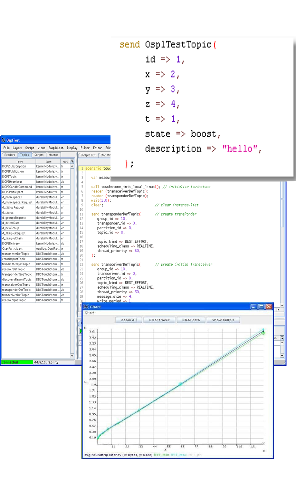

Tools
Tester Tool
← Benefits- Validate and Monitor your entire DDS based system
- Provides Specific DDS scripting Language
- Syntax highlighting editorand script-executor
- Batch execution of regression tests
- Automated testing of DDS systems
- QoS-conflict detection and monitoring
- System Benchmarking
- Application DDS-Aware and DDS Services monitoring
Tester allows you to perform Blackbox testing
